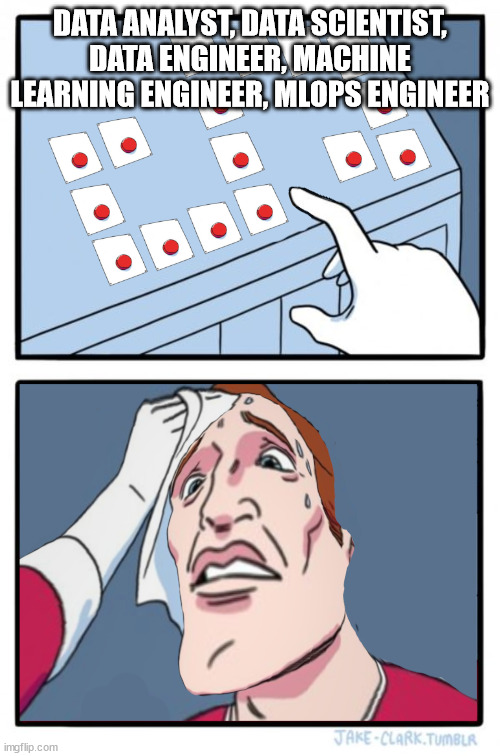
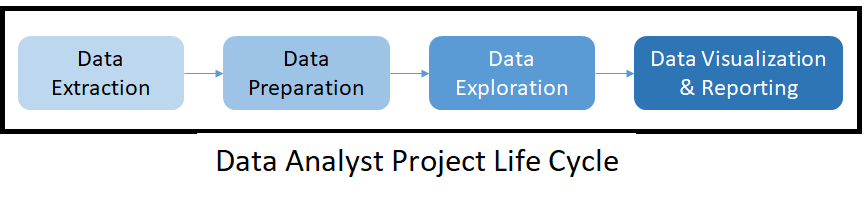

Motivation:
For a student of some major (say, chemical engineering) wanting to break into another field (say, data science), the first minimum viable product of your side-learning is getting an internship. It means that you should design your learning journey to match the internship descriptions if you want to save time. Yet, after hours browsing internships on LinkedIn, I get all confused about “data scientist”, “machine learning engineer”, and to a lesser extent, “data analysts”, and “data engineer”. The reason is a lack of boundary between job titles - sometimes a data analyst is required to know awfully lots about (what I think) “data engineering stuff” and vice versa. These overlapping roles forced me to research further, and hence this post: documenting what I have found, so that everybody having read this will be less confused.
This will be a two-post series, with this first one working on data analyst and data engineer, the more distinguishable ones. I will look at some internship posts first, and then comment a little on why these overlapping responsibilities exist.
Now let’s look at some internships from TikTok, the company I am eyeing at. These job posts have high requirements for candidates and should be a good ceiling, and they also have overlapping responsibilities.
The easily distinguished jobs:
Data Analyst:
%20data%20analyst%20intern%20Jobs%20LinkedIn.png)
Here is a helpful diagram from DataCamp that sums up the job descriptions well:

I will analyze the job descriptions from the angle of someone seeking employment as soon as possible, and that is the meaning of “for our purpose” below. From the job descriptions, you will need to know…
Basic:
- …how to use a business intelligence platforms - Looker, Power BI, Tableau and the like. These platforms help you do all of the steps 2-4 above. Take Power BI. You can prepare and transform data; you can explore data from basic (mean, median, etc.) to complex operations that you define yourself; you can do all kinds of visualizations; you can publish the findings to a report, an app (possibly dashboard), or slides to aid your presentation (more on that below).
- …how to communicate (written and oral). After analyzing the data, of course you will need to present insights to “stakeholders” and your superiors, often in a meeting. Because n̶o̶b̶o̶d̶y̶ ̶l̶i̶k̶e̶s̶ ̶m̶e̶e̶t̶i̶n̶g̶time is precious, “concise” and “easy to understand” are good traits to have.
A simple (but not easy) way to demonstrate the two points above is having done a project on the platform of your choice and keep a blog where you update the progress (and muse about other topics).
Preferred (These are specific TikTok’s preferences):
- …how to do statistical analysis. This is arguably “basic”, not “preferred”. The techniques and numbers you use in data analysis all have statistical meanings; you really should know them to a) avoid foolish mistakes and b) modify the technique based on your need instead of just using them as is.
- …how to use API. Application Programming Interface (API) is a way for computer to communicate, most commonly seen on the Internet. A business intelligence platform can do all things, except generating initial data - you will need to load them in yourself. For TikTok, the data seem to be stored in a cloud database, so you will need to use API to pull them down. Best way to learn is to try out the APIs of website on the Internet, which is just a different way of browsing. For me, I used API to convert ebook for my Kindle and create movie ratings and recommendation.
- ..how to use Hadoop-related technology. Apache Hadoop is an open-source framework specialized in handling big data. Hadoop Distributed File System (HDFS), as the name suggests, help you work with data that are distributed across different nodes in a cluster (read: different computers in a group of computers connected in some special way by Hadoop). A company asking for Hadoop suggests a large volume of data (and facilities to store them), which is certainly the case at TikTok. This is a confusion for me. Hadoop is more often seen in the requirement for data engineers who use the framework to design data architecture and pipeline helping end-users (such as data analysts) to access massive volume of data fast and accurately.
Data Engineer:
As a LinkedIn post suggested, data engineers are important. A data pipeline must exists before any analysis can be done. So I put here two internship posts: %20data%20engineer%20Jobs%20LinkedIn.png)
%20data%20engineer%20Jobs%20LinkedIn.png)
Before continuing, let’s me clarify that data engineer is not my current path, so I do not know the topics I mention well. There are people who are more qualified than me out there (especially on YouTube), seek them for further details. From the job descriptions, you will need to know…
- …Hadoop ecosystem/open-source big data tech stacks. From the Apache distributed (big) data family, Hadoop has many brothers, most notably Spark, Kafka, and Flink. These tech stacks are the main tools of you data engineers, so know them well.
- …SQL. MySQL is the place to start (YouTube uses that), and you can find free courses on Kaggle and practices on StrataScratch.
- …one or more in Java/Go/C++/C#/Python. There is no “supreme language”, use the one that you feel confident about.
- …data structures & algorithms. Your DSA will be measured in the coding interviews. But don’t go on rocking 500+ LeetCode problems, make sure to explain the solution well, as you will be tested on communication skills as well after online assessment.
- …data warehouse/ETL development/data model/(data analysis/E-Commerce). Extract Transform Load (ETL) is the basic job of data engineers: extract data from source(s), transform them based on requirement, and load the data into systems so that end-users can access. Data warehouse is a data architecture, alongside with others (try “data lake” and “data lakehouse”). E-Commerce is company-specific. But data analysis?
Confusion cleared, and introduction to the next post:
Now, let’s go back to “data analysis in data engineer job”, and “Hadoop in data analyst” that confused me at first. After some thoughts, the reasons are clear. First, it’s just poor knowledge. The boundary of job titles exist inside my mind - it is clearly not the case in reality so I need to update that. Second, if one thinks about it, the data pipeline that data engineers build should cater to the needs to end-users such as data analysts, so work and communication will be smoother if both sides have knowledge of what the others are doing. (Or the company/team is small, so the employee is put in charge of both building his own pipeline, at least to extract data from company Hadoop system, and analyzing data.)
In the next post, I will turn to “data scientist” and “machine learning engineer”, whose responsibilities are even more overlapping.
Gratitude
Thank you for having this far. I have wanted to write and publish somewhere for a long time, and finally have the courage to do so here. Inexperienced as I am, this post surely sucks at some point, but I want to publish it anyway to get things going. Feedback is valued, but please be polite and detailed.